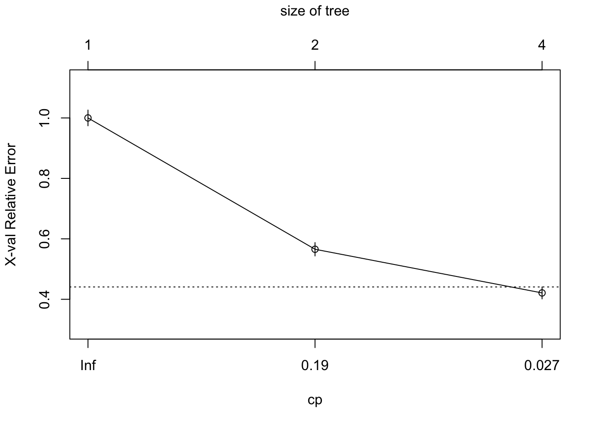
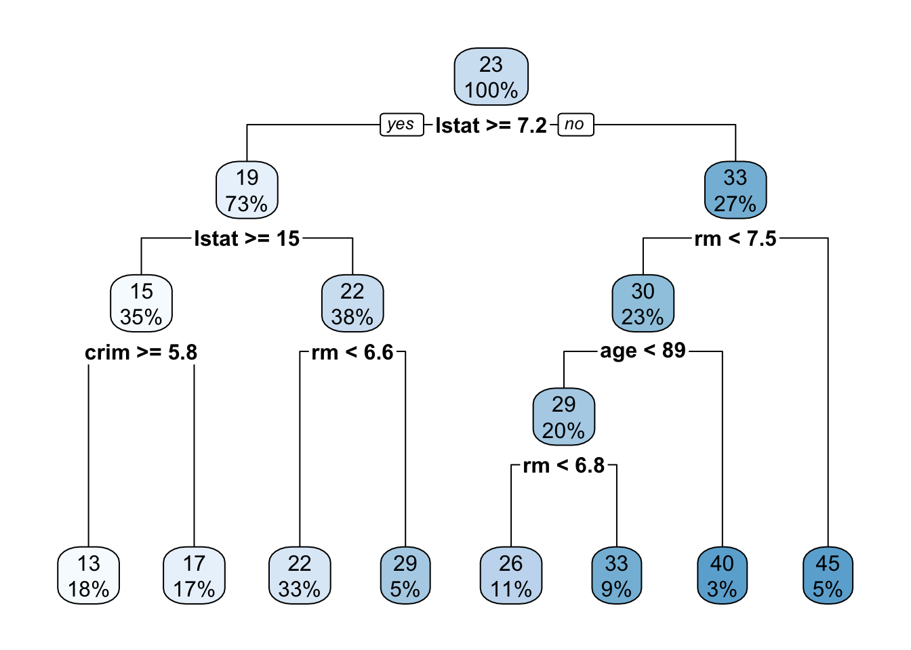

Chapter 5 CART (Decision Tree)
2021-12-22 updated
Ref: here
Decision Tree can handle classification and regression problem. It is also called CART (Classification and Regression Tree). In the following, we will use spam data and Boston house pricing data to demonstrate.
5.1 Classification Tree
library(DAAG) # data sets used in examples and exercise
library(party) # for recursive partitioning
library(rpart) # recursive partitioning and regression trees
library(rpart.plot) # plot rpart models
library(mlbench) # collection of ML benchmark problems
library(caret) # Misc functions for training/plotting models
library(pROC)
library(tree) # classification and regression tree# Getting Email spam data
str(spam7)## 'data.frame': 4601 obs. of 7 variables:
## $ crl.tot: num 278 1028 2259 191 191 ...
## $ dollar : num 0 0.18 0.184 0 0 0 0.054 0 0.203 0.081 ...
## $ bang : num 0.778 0.372 0.276 0.137 0.135 0 0.164 0 0.181 0.244 ...
## $ money : num 0 0.43 0.06 0 0 0 0 0 0.15 0 ...
## $ n000 : num 0 0.43 1.16 0 0 0 0 0 0 0.19 ...
## $ make : num 0 0.21 0.06 0 0 0 0 0 0.15 0.06 ...
## $ yesno : Factor w/ 2 levels "n","y": 2 2 2 2 2 2 2 2 2 2 ...# Data partition
set.seed(1234)
mydata <- spam7
ind <- sample(2, nrow(mydata), replace=TRUE, prob=c(0.5,0.5)) # assign index
train <- mydata[ind == 1,]
test <- mydata[ind == 2,]
tree <- rpart(yesno ~ ., data=train)
rpart.plot(tree)
printcp(tree)##
## Classification tree:
## rpart(formula = yesno ~ ., data = train)
##
## Variables actually used in tree construction:
## [1] bang crl.tot dollar
##
## Root node error: 900/2305 = 0.39046
##
## n= 2305
##
## CP nsplit rel error xerror xstd
## 1 0.474444 0 1.00000 1.00000 0.026024
## 2 0.074444 1 0.52556 0.56556 0.022128
## 3 0.010000 3 0.37667 0.42111 0.019773plotcp(tree)
# print confusion matrix of your model on training dataset
p <- predict(tree, train, type = "class")
confusionMatrix(p, train$yesno, positive="y")## Confusion Matrix and Statistics
##
## Reference
## Prediction n y
## n 1278 212
## y 127 688
##
## Accuracy : 0.8529
## 95% CI : (0.8378, 0.8671)
## No Information Rate : 0.6095
## P-Value [Acc > NIR] : < 2.2e-16
##
## Kappa : 0.6857
##
## Mcnemar's Test P-Value : 5.061e-06
##
## Sensitivity : 0.7644
## Specificity : 0.9096
## Pos Pred Value : 0.8442
## Neg Pred Value : 0.8577
## Prevalence : 0.3905
## Detection Rate : 0.2985
## Detection Prevalence : 0.3536
## Balanced Accuracy : 0.8370
##
## 'Positive' Class : y
## # ROC curve
p1 <- predict(tree, test, type="prob")
p1 <- p1[,2] # extract y information
r <- multiclass.roc(test$yesno, p1, percent = TRUE)
roc <- r[["rocs"]]
r1 <- roc[[1]]
plot.roc(
r1,
print.auc = TRUE,
auc.polygon = TRUE,
grid = c(0.1, 0.2),
grid.col = c("green", "red"),
max.auc.polygon = TRUE,
auc.polygon.col = "lightblue",
print.thres = TRUE,
main = "ROC Curve"
) ## Regression Tree
## Regression Tree
data("BostonHousing")
mydata <- BostonHousing
str(mydata)## 'data.frame': 506 obs. of 14 variables:
## $ crim : num 0.00632 0.02731 0.02729 0.03237 0.06905 ...
## $ zn : num 18 0 0 0 0 0 12.5 12.5 12.5 12.5 ...
## $ indus : num 2.31 7.07 7.07 2.18 2.18 2.18 7.87 7.87 7.87 7.87 ...
## $ chas : Factor w/ 2 levels "0","1": 1 1 1 1 1 1 1 1 1 1 ...
## $ nox : num 0.538 0.469 0.469 0.458 0.458 0.458 0.524 0.524 0.524 0.524 ...
## $ rm : num 6.58 6.42 7.18 7 7.15 ...
## $ age : num 65.2 78.9 61.1 45.8 54.2 58.7 66.6 96.1 100 85.9 ...
## $ dis : num 4.09 4.97 4.97 6.06 6.06 ...
## $ rad : num 1 2 2 3 3 3 5 5 5 5 ...
## $ tax : num 296 242 242 222 222 222 311 311 311 311 ...
## $ ptratio: num 15.3 17.8 17.8 18.7 18.7 18.7 15.2 15.2 15.2 15.2 ...
## $ b : num 397 397 393 395 397 ...
## $ lstat : num 4.98 9.14 4.03 2.94 5.33 ...
## $ medv : num 24 21.6 34.7 33.4 36.2 28.7 22.9 27.1 16.5 18.9 ...# Data partition
set.seed(1234)
ind <- sample(2, nrow(mydata), replace = T, prob = c(0.5, 0.5))
train <- mydata[ind == 1,]
test <- mydata[ind == 2,]
tree <- rpart(medv ~., data = train)
rpart.plot(tree)
printcp(tree)##
## Regression tree:
## rpart(formula = medv ~ ., data = train)
##
## Variables actually used in tree construction:
## [1] age crim lstat rm
##
## Root node error: 22620/262 = 86.334
##
## n= 262
##
## CP nsplit rel error xerror xstd
## 1 0.469231 0 1.00000 1.01139 0.115186
## 2 0.128700 1 0.53077 0.62346 0.080154
## 3 0.098630 2 0.40207 0.51042 0.076055
## 4 0.033799 3 0.30344 0.42674 0.069827
## 5 0.028885 4 0.26964 0.39232 0.066342
## 6 0.028018 5 0.24075 0.37848 0.066389
## 7 0.015141 6 0.21274 0.34877 0.065824
## 8 0.010000 7 0.19760 0.33707 0.065641plotcp(tree)
# predict
p <- predict(tree, train)
# RMSE
(sqrt(mean((train$medv - p)^2)))## [1] 4.130294# R squared
(cor(train$medv, p))^2## [1] 0.8024039In the regression model, the r square value is 80% and RMSE is 4.13, not bad at all.. In this way, you can make use of Decision classification regression tree models.